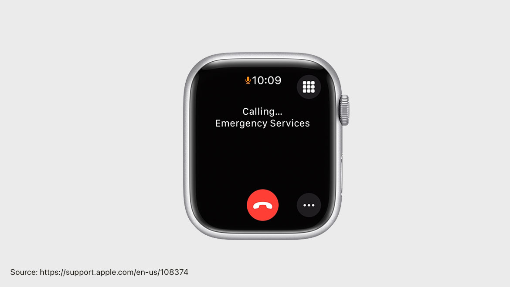

The Design Leader Who Shaped My Path
Jony Ive is a designer I’ve admired ever since I began my journey into design. Not just for his accomplishments or the iconic products he’s brought to life, but for his deep-rooted design philosophy, his leadership style, and his ability to stay true to the essence of user-centric thinking in a world that often prioritizes profit over people. Born in Chingford, England in 1967, Jonathan Paul Ive grew up in a creative and supportive household. His father, Michael Ive, was a silversmith and educator—someone who didn’t just encourage Jony's interests but actively nurtured them. Together, they built things, explored ideas, and cemented a lifelong relationship with craftsmanship and form (Kidd, 2023).
Ive’s early clarity of purpose is something that resonates with me. By the time he was in high school, he knew he wanted to be a designer. That clarity propelled him to Newcastle Polytechnic in 1985—now Northumbria University—one of London’s premier design schools (Kahney, 2013). There, he refined his industrial design skills, ultimately earning a scholarship thanks to his exceptional talent and relentless drive. It’s that kind of focus and work ethic that has inspired me, especially in moments when my path feels uncertain or overwhelming.
What makes Jony Ive so iconic isn’t just the beauty of the products he helped design, but the philosophy behind them. In the 1980s and early 1990s, when engineering dictated much of product development and design was often an afterthought, Ive envisioned something radically different. He believed that design and engineering had to work in harmony, with design advocating for the needs of the user. While Microsoft and other tech companies focused primarily on backend functionality, Apple under Ive’s design influence began prioritizing how people actually felt using their devices (Isaacson, 2011).
Ive’s design ethos was heavily influenced by the German designer Dieter Rams, famous for his work at Braun. Rams' principles of simplicity, functionality, and removing the unnecessary deeply informed Ive’s minimalist philosophy. You can see this lineage clearly in products like the iPod, inspired in part by Rams’ T3 radio, and the iPhone calculator app which resembles Braun’s ET66 (Welch, 2020). The SK4 Stereo-Phonosuper, another Rams classic, set the precedent for the clean, approachable, and timeless design language that Apple would later adopt.
When Ive joined Apple in 1992, the company was led by John Sculley and its design department by Robert Brunner. His first project was the Newton MessagePad, a product that, although commercially unsuccessful, revealed his user-centered brilliance. Ive developed a spring-loaded stylus that popped out with a push—an obsessive detail, yes, but one that demonstrated his commitment to intuitive user experiences (Bonnington, 2013). He even relocated temporarily to Taiwan to ensure production aligned with his vision. Unfortunately, poor communication between engineering and design ultimately made the Newton a failure in the market. Still, Ive won an award for the design and walked away with valuable lessons about the necessity of stakeholder alignment and the importance of communication.
Everything changed in 1997 when Steve Jobs returned to Apple. Jobs once said, "Apple’s goal is not to make money. It’s to make great products" (Isaacson, 2011). That message lit a fire in Ive, who finally found a leader that understood and shared his values. Under Jobs’ leadership, Ive had the freedom to pursue his ideas fully—and the results were transformational. The iMac, iPod, iPhone, iPad, and Apple Watch are not just tools—they are cultural symbols. Each was born from a union of simplicity, human intuition, and technological elegance.
This alignment between Ive and Jobs is a powerful case study in strategic communication and stakeholder management. Ive wasn't just a designer executing a vision handed down from above. He was a collaborator, an advocate, and a strategic communicator who articulated his design rationale not just to his team but across departments and with executives. He understood that great design requires great storytelling. That insight has stayed with me as I work on becoming not just a designer, but a leader in design.

Ive's legacy doesn’t stop at aesthetics. Consider the Apple Watch, one of the last major products he helped design. It introduced health-focused features like heart-rate monitoring, fall detection, and Emergency SOS that have literally saved lives by contacting emergency services in real-time (Apple, 2023). This, to me, is the pinnacle of design leadership: creating something beautiful that is also deeply meaningful. Design, at its best, is not about decoration—it’s about solving real problems and enriching lives.
Inspired by Ive, I’ve chosen to focus my design career on user experience (UX) and user interface (UI) design. Like him, I’m more interested in helping people than in chasing profits. My mission is to build beautiful, intuitive, and affordable digital products—websites and apps that help small business owners in the Dallas-Fort Worth area connect with their customers without breaking the bank. This localized impact may seem small, but it’s deeply personal to me. I want to use design to uplift others, particularly those who are often left behind by expensive, inaccessible digital tools.
Every time I audit a website or wireframe a new app interface, I hear Ive’s design mantra in the back of my mind: what can I take away to make this more intuitive? Can I make this easier, cleaner, simpler? Like him, I believe in subtraction as a strategy—not just for aesthetics but for usability. Less truly is more, especially when clarity leads to better outcomes.
One of the key lessons I’ve taken from Ive is the importance of persistence. During his early years at Apple, he could have walked away after seeing his designs compromised or ignored. But he stayed. He kept trying. And eventually, the environment changed to support the kind of work he believed in. That kind of grit is something I aim to embody. Whether it’s presenting ideas to reluctant stakeholders or redesigning something for the fifth time because it’s still not quite right—I try to carry that same spirit of excellence and perseverance.
In the future, as I grow into leadership roles, I plan to take a page from Ive’s playbook: listen more than I speak, design for people rather than for awards, and always advocate for simplicity and empathy. I’ll seek out collaborators who share the same values and work to build teams where engineering, design, and business speak a common language.
To me, Jony Ive isn’t just a designer. He’s a storyteller, a strategist, and a deeply human leader. His work reminds me that the best designs aren’t necessarily the flashiest—they’re the ones that feel inevitable, like they’ve always been there. And that’s what I hope to create too: design that feels natural, seamless, and needed.
Works Cited
- Apple. "Use Emergency SOS on Your Apple Watch." Apple Support, 2023, https://support.apple.com/en-us/108896.
- Isaacson, Walter. Steve Jobs. Simon & Schuster, 2011.
- Kidd, Chip. "Jony Ive: Apple’s Design Genius." Kiddle Encyclopedia, 2023, https://kids.kiddle.co/Jony_Ive.
- Bonnington, Christina. "Jony Ive’s First Design Project at Apple." Engadget, 5 Dec. 2013, https://www.engadget.com/2013-12-05-jony-ives-first-design-project-at-apple.html.
- Kahney, Leander. Jony Ive: The Genius Behind Apple's Greatest Products. Portfolio/Penguin, 2013.
- Welch, Bryan. "Inspiration: Dieter Rams." Welch Architecture, 2020, .